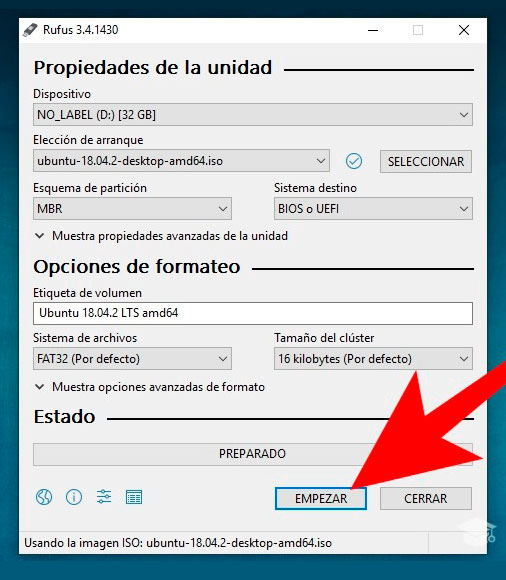

Herramientas para Instalar un Sistema operativo
- USB
- ISO del Sistema Operativo a Instalar
- Programa para Bootear el ISO en el USB
Proceso de Booteo
Con todas las herramientas necesarias vamos a proceder a introducir el USB en el equipo y a abrir la herramienta la cual usaremos para bootear el sistema operativo, en este caso el Rufus.

Ya con el programa abierto, procedemos a escoger la unidad de almacenamiento la cual vamos a bootear, posteriormente el ISO del sistema que se desea instalar.

Posteriormente escogemos el esquema de particiones de nuestro equipo y el tipo de sistema.

Finalmente presionamos el botón de empezar y el proceso de booteo iniciara mostrando un mensaje de preparado al culminar.

Proceso de Instalación Windows
Primeramente, se procede a introducir la USB Booteable al equipo al cual se desea instalar el sistema operativo, con la unidad conectada se enciende el equipo y se pulsa la tecla de función asignada la cual permite entrar al boot menu del equipo.
Por lo general esta debería ser F12, pero como la BIOS de cada PC puede ser diferente cabe la posibilidad de que te digan otras como F1, F8, F9, F10, TAB o ESC.
Se escoge la unidad USB y se procede con el proceso de instalación.
Tras esta ventana de carga, que dura unos segundos, veremos la ventana inicial del asistente de instalación de Windows 10.

En esta ventana debemos configurar el idioma de nuestro sistema operativo, el formato de hora y moneda y el tipo de teclado que vamos a utilizar.

Pulsamos sobre «Siguiente» y en la nueva ventana que aparece pulsaremos sobre «Instalar ahora».

El siguiente paso que nos pedirá el asistente será introducir el número de licencia de nuestro Windows. Si la licencia se encuentra grabada en la BIOS/UEFI de nuestro ordenador, esta ventana no la veremos. De lo contrario, si la tenemos a mano podemos introducirla o, si no, pulsamos sobre «No tengo clave de producto» para continuar sin dicha licencia.
A continuación, el asistente nos preguntará por la versión de Windows 10 que queremos instalar. Debemos elegir la que corresponda a nuestra licencia para evitar problemas.

Pulsamos de nuevo sobre Siguiente y aparecerán los términos de licencia, los cuales aceptaremos para continuar.

La siguiente ventana es una de las más importantes. En ella elegiremos el tipo de instalación que queremos:
- Si queremos actualizar Windows y no perder los datos ni aplicaciones, elegiremos «Actualización».
- Para una instalación limpia, elegiremos «Personalizada».
En nuestro caso seleccionamos la segunda opción, personalizada, y veremos un nuevo paso en el asistente donde elegir la partición del disco duro donde instalaremos Windows.
Si queremos crear particiones, pulsaremos sobre «Nuevo» y configuraremos el espacio que queremos utilizar para nuestro Windows. Si no hacemos nada, el asistente utilizará automáticamente todo el espacio para instalar Windows (y crear la partición de recuperación de 500 MB). En la segunda imagen podemos ver las particiones que crea por defecto Windows para poder arrancar y funcionar.
Después de formatear para instalar Windows 10, pulsamos sobre «Siguiente» y comenzará el proceso de instalación. Durante este proceso se llevarán a cabo una serie de tareas:
- Copia de todos los archivos de instalación al disco duro.
- Preparar los archivos para la instalación.
- Instalar características de Windows.
- Instalar actualizaciones incluidas en el medio se instalación.
- Finalizar instalación.
Debemos esperar a que finalice el proceso de instalación. Durante el cual, el ordenador se reiniciará varias veces y, además, veremos distintas fases, tanto del asistente de instalación como de la configuración inicial de nuestro Windows 10.

Tras los reinicios, Windows 10 ya estará instalado, aunque antes de poder usarlo tendremos que completar el asistente de configuración inicial.

Este proceso puede tardar unos minutos y, cuando finalice, ya podremos ver el escritorio de Windows. Ya hemos instalado Windows 10 desde cero.